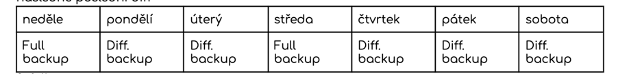
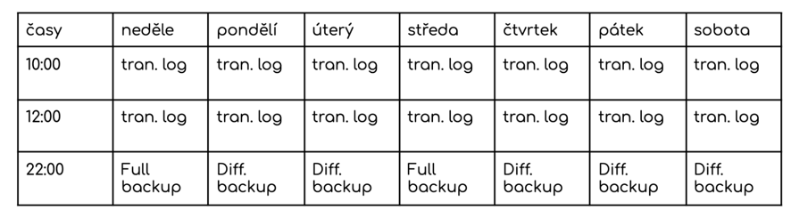

jsou ukládány v univerzálním formátu, které by měly všechny db servery podporovat
SQL, CSV, XML, JSON
data jsou uložena na samotném serveru
přistupuje se k nim méně frekventovaně
Zálohování
uložení na krátkou dobu --> záleží na důležitosti a četnosti dat
ukládá se na straně serveru
přístup k datům je vysoce frekventovaný
formát je aktuální a připraven k častému načítání
Zálohování a obnova dat
záloha nám slouží jako jistota v případě havárie např. chyba hardwaru či lidské chyby.
zálohovat lze celou databázi, nebo jen její části
Full backup--> záloha všeho
Differential backup--> rozdíl v datech od poslední zálohy
Zálohovací strategie
zahrnuje zálohování tak i obnovu dat a) definuje typ a frekvenci na základě důležitosti dat. Vyžadována rychlos a bezpečnost hardwaru b) strategie definuje kdo je za obnovu zotpovědný jak se bude dělat
Transitiční log
Záloha příkazů, změn provedených i s daty implicitně zapnutý defaultně
Simple má dočanou povahu a po uložení se starý záznam maže a vytvoří se nový. Nemá smysl je zálohovat, protože změny už jsou uloženy v DB
Full je samostatně zálohovaný a jsou v něm uloženy všechny transakce i ty provedené
pokud dodjde k výpadku systému z transičního logu se zpětně provedou příkazy aby nedošlo ke ztrátě dat
Simple recovery
Bez transakční log
2x týdně full backup a mezi nimi diff backup
Obnova je možná každý den a vždy se napřed provede recovery posledního full backupu a následně poslední diff

Full recovery
S transakčním logem
zálohovaný několikrát za den a na konci dne se provede backup

Sum-up
Archivace --> ukládání dat na dlouhou dobu do univerzálních formátů. Přistupuje se k ním málo kdy
Zálohování --> ukládání dat do aktuálního formátu. Očekává se frekventovaný přístup.
Full backup --> záloha všeho
Diff backup --> rozdíl v dated od poslední zálohy
Transitiční log--> záloha příkazů a změn slouží pro rollback v případě erroru
Simple --> po uložení změn se mažou staré změny
Full --> samostatně zálohovaný a jsou v něm uloženy všechny transakce i ty provedené
Recovery
Simple --> bez logu 2x týdně full backup a mezi nimi diff backup. obnova možná každý den --> 1. recovery of last full backup then last diff
Full --> zálohovaný několikrát za den a na konci dne --> backup